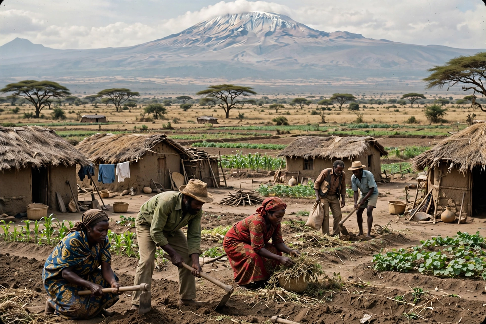

From Wikipedia, the free encyclopedia

Ujamaa (Swahili for "familyhood" or "extended family") was a socialist ideology and development policy that formed the basis of Tanzania's national programme under President Julius Nyerere following the Arusha Declaration of 1967. Nyerere presented ujamaa as an authentically African form of socialism, rooted in the communal values of traditional village life rather than in Marxist class struggle, and paired it with the goal of national self-reliance (kujitegemea).
The centrepiece of ujamaa was villagisation: the rural population, most of whom lived in scattered homesteads, was to move into communal villages where land would be farmed cooperatively and services such as schools, clinics and clean water could be provided efficiently. The state nationalised banks, major industries and large estates, introduced free universal primary education and adult literacy campaigns, and Tanzania achieved notable gains in literacy and basic health care.
Early villagisation was voluntary and slow. Frustrated by the pace, the government launched the compulsory "Operation Vijiji" in 1973–1976, relocating some 13 million people — the largest resettlement programme in African history — often with coercion and haste. Communal farming frequently underperformed: peasants preferred to work their private plots, incentives were weak, and agricultural output and exports fell. Combined with the oil shocks of the 1970s and the costly war with Uganda in 1978–79, the economy deteriorated sharply.
Nyerere stepped down in 1985, and his successors liberalised the economy under structural adjustment programmes. Historians remain divided: ujamaa is widely judged an economic failure, yet it is credited with forging an unusual degree of national unity, peace and linguistic cohesion in Tanzania, avoiding the ethnic fragmentation seen elsewhere in post-colonial Africa. The word remains one of the "national values" commemorated in Tanzania, and the ujamaa village era is still debated in African political thought.
See also: Julius Nyerere · Tanzania · African socialism · Arusha Declaration